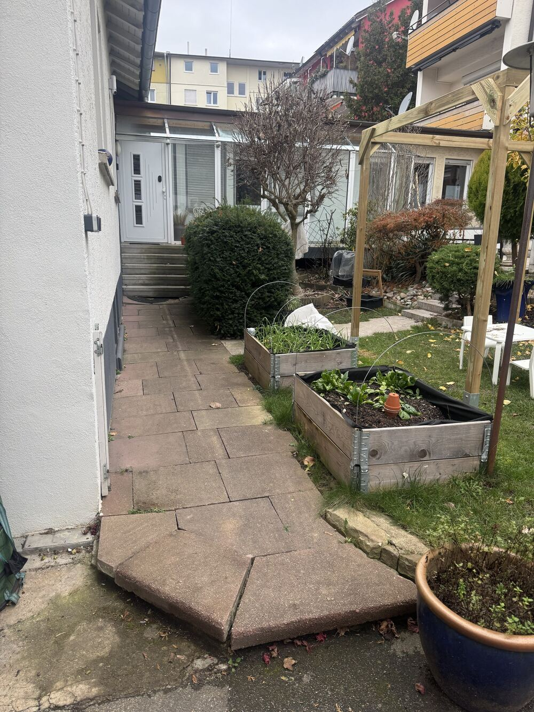
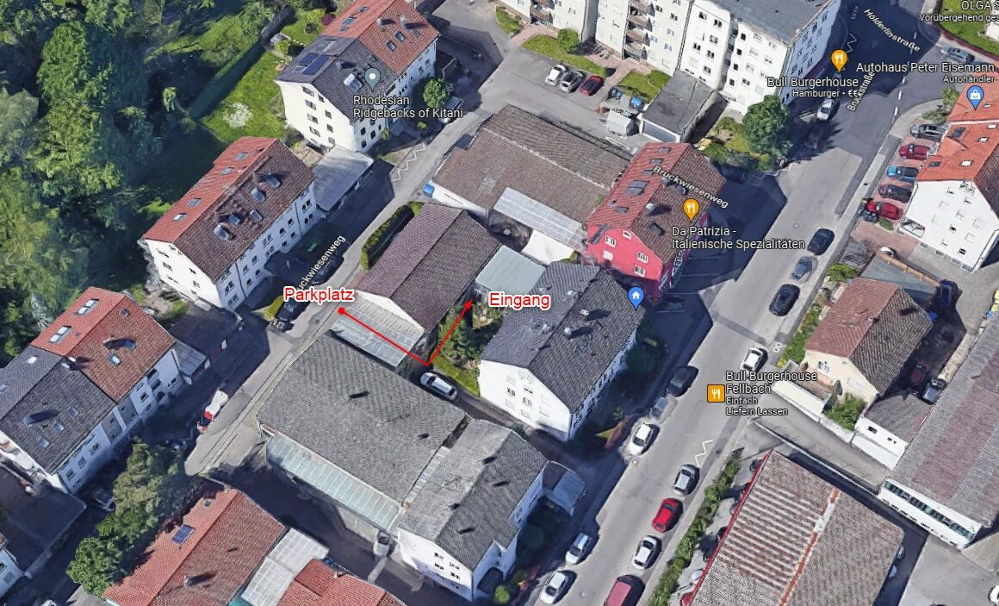
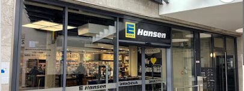
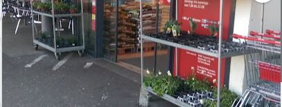
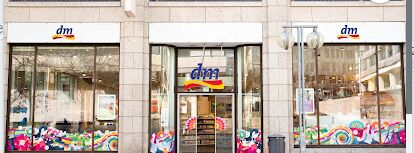
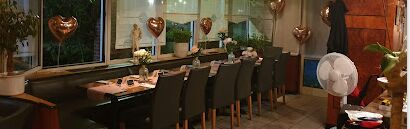

Osjećajte se kao kod kuće! Želimo da vam boravak bude odličan, zato smo ovdje skupili najvažnije informacije. Za pitanja ili prijedloge javite nam se u bilo kojem trenutku – uživajte u Fellbachu!
Anita & Johannes
📄 PDF vodič (njemački/engleski)Dolazak & prijava
Apartman se nalazi u stražnjoj zgradi (Bruckstraße 22/1). Prilaz, parkirno mjesto i ulaz su sa stražnje strane, iz ulice Bruckwiesenweg 12 – ne iz Bruckstraße.
📍 Odredište za navigaciju: Bruckwiesenweg 12Kako do nas
- Vozite ulicom Bruckstraße i na uglu s crvenom kućom (restoran Da Patrizia) skrenite u Bruckwiesenweg.

Automobilom: Bruckstraße (gore) → Bruckwiesenweg → parkiralište (crvena linija) - Pratite Bruckwiesenweg dok ne skrene ulijevo. Nakon zavoja s lijeve strane vidjet ćete crvenu zgradu s dvoja bijela garažna vrata. Parkiranje: parkirajte na popločenoj površini ispred lijevih vrata dvostruke garaže (pored kampera) – ta vrata smijete potpuno zaklopiti. Desna garažna vrata moraju uvijek ostati slobodna.

Bruckwiesenweg: crvena zgrada s dvije bijele garaže - Desno od garaža nalaze se metalna vrata s nadstrešnicom.

Vrata desno od garaža - Metalna vrata su otvorena – samo prođite. Nastavite pješice popločenom stazom uz bijelu kuću, pored povišenih gredica, do bijelih ulaznih vrata sa stepenicama i staklenom nadstrešnicom.

Staza uz kuću do vrata 
Bijela ulazna vrata sa staklenom nadstrešnicom - Tipkovnica Yale nalazi se gore desno na ulaznim vratima: dodirnite tipkovnicu da zasvijetli → unesite svoj osobni kod → potvrdite zelenom ✓ → pritisnite kvaku. Kod ćete pronaći u aplikaciji Airbnb uz svoje putovanje (upute za prijavu); vrijedi samo tijekom vaše rezervacije.

Tipkovnica Yale: unijeti kod, potvrditi ✓ - Ravno u hodniku su vrata s natpisom „Air BnB“ – to je vaš apartman. Pri dolasku ključ je u bravi.

U hodniku: vrata „Air BnB“


Pogled odozgo

Autobusom & vlakom: vidi prijevoz. Autobusna stanica Cannstatter Platz udaljena je samo nekoliko minuta hoda.
Wi-Fi
Apartman & kućni red
- Pušenje je zabranjeno u cijelom apartmanu.
- Bez zabava i događanja.
- Noćni mir od 22 do 7 sati – molimo tišinu i u dvorištu te na putu do automobila.
Dobro je znati
- Grijanje & prozračivanje: radijatore podešavate termostatom (stupanj 3 ≈ 20 °C). Zimi molimo prozračujte kratko, ali temeljito (prozor širom otvoren 5 minuta) umjesto da ga ostavljate stalno nagnutim.
- Kava: za jutarnju kavu spreman je aparat Senseo. Obično vam ostavimo nekoliko jastučića za početak – za duži boravak najbolje je kupiti pakiranje u kupovini (ima ih u svakom supermarketu).
- Otpad: otpad pri odlasku jednostavno ostavite u apartmanu – mi ćemo se pobrinuti za njega.
- Nedjeljom su u Njemačkoj svi supermarketi zatvoreni – najbolje kupujte subotom.
Kupovina, pekarnice & hrana
★ = Google ocjena (broj recenzija) iz našeg istraživanja – aktualne ocjene i radno vrijeme pod „Karta“. Udaljenosti od apartmana.
Supermarketi & drogerija





Pekarnice


Hrana & piće



Naši savjeti – baš za vas
Za obitelji
Jedan od najljepših zooloških vrtova u Njemačkoj, s mnogo nastambi i staklenika – odličan izlet i po hladnoći ili kiši.
Zatvoreni bazen s toboganima, saunom i novim svijetom džungle za najmlađe (otvoren ljeti 2026.). Vanjski bazen zimi je zatvoren.
Ravna kružna staza bez prepreka (oko 4 km) kroz vinograde – lako s dječjim kolicima, s pogledom na Fellbach.
130 godina povijesti automobila na devet katova – zanimljivo i djeci, savršeno za kišne dane.
Sasvim blizu: Da Patrizia (★ 4,5) odmah pored i Trattoria Pane e Pino (★ 4,7) oko 150 m – pizza & tjestenina sviđaju se i najmlađima.
Za parove
Vinska staza (oko 4,3 km) počinje kod Neue Kelter vinara iz Fellbacha (Kappelbergstraße 48) i vodi kroz vinograde do vidikovca „Blick über Fellbach“. Svake prve subote u mjesecu ondje se održava otvoreno kušanje vina.
Klasicistička kapela iznad vinograda pruža jedan od najljepših pogleda na dolinu Neckara. Sama kapela je zatvorena od studenog do ožujka – ali šetnja i pogled vrijede tijekom cijele godine.
Topla mineralna voda u unutarnjim i vanjskim bazenima te sauna – divno opuštajuće, posebno zimi.
Trattoria Pane e Pino (★ 4,7), Irodion (★ 4,6, grčki, sada u povijesnoj Alte Kelter) ili jednostavno odmah pored u Da Patrizia (★ 4,5).
Esslingen sa starim gradom punim kuća s drvenom konstrukcijom i dvorcem (oko 20 min) ili rezidencijalni dvorac Ludwigsburg, jedan od najvećih baroknih dvoraca u Njemačkoj (oko 25 min, zimi s vođenim obilascima).
Za putnike solo & poslovno
Od kolodvora Fellbach linijom S2 ili S3 za oko 12–15 minuta stižete na glavni kolodvor u Stuttgartu – Schlossplatz, Königstraße, tržnica i Staatsgalerie tada su na dohvat pješice.
Dva obavezna odredišta za ljubitelje automobila, svaki se lako razgleda za 2–3 sata. Oba su ponedjeljkom zatvorena; Muzej Porsche je osim toga zatvoren od 18. 1. do 1. 2. 2027. zbog obnove.
Prvi televizijski toranj na svijetu od armiranog betona – odličan i nakon posla: svakodnevno 10–22, zadnji ulaz 21:30.
Kružna tura preko Kappelberga kroz vinograde i šumu do vidikovca – oko 13,7 km, oko 4 sata. Zimi krenite rano (oko 17 sati pada mrak) i pazite na led u šumi.
Maultaschen i Kässpätzle u Wirthshaus Zum Kuckuck (★ 4,4, 747 recenzija) – ugodno, i kad jedete sami.
Događanja u Fellbachu & okolici
Stanje 22. 11. 2026. · bez jamstva – prije posjeta provjerite kod organizatora.
- 28. 11.–22. 12. 2026.Božićni sajam u Fellbachu
Oko Lutherkirche i gradske vijećnice, s pozornicom i programom za djecu. Pon.–sri. 16–20, čet.–ned. 12–20, ulaz slobodan (završetak predviđen 22. 12.).Središte Fellbacha - 25. 11.–23. 12. 2026.Božićni sajam u Stuttgartu
Jedan od najstarijih i najvećih božićnih sajmova u Europi, oko 250 štandova. Ned.–čet. 11–21, pet. & sub. 11–22.Središte Stuttgarta · oko 15 min S-Bahnom - 24. 11.–22. 12. 2026.Srednjovjekovni & božićni sajam u Esslingenu
Ned.–čet. 11–20:30, pet. & sub. 11–21:30.Esslingen am Neckar · oko 20 min - 24. 11.–22. 12. 2026.Barokni božićni sajam u Ludwigsburgu
Oko 150 štandova u baroknom okruženju, svakodnevno 11–21.Ludwigsburg · oko 25 min - do početka/sredine siječnja 2027.Christmas Garden u Wilhelmi
Svjetlosna staza kroz povijesni park, navečer. Ulaznice online (christmas-garden.de).Stuttgart-Bad Cannstatt - svake 1. suboteOtvoreno kušanje vina – Fellbacher Weingärtner
Sljedeći termini: 5. 12. 2026., 2. 1., 6. 2. i 6. 3. 2027.Neue Kelter, Kappelbergstraße 48, Fellbach - 20. 1. 2027. · 20:00„Huckleberry Finn“ s Herbertom Knaupom (na njemačkom)Schwabenlandhalle Fellbach
- 7. 2. 2027. · 19:00Labuđe jezero – Grand Classic BalletSchwabenlandhalle Fellbach
- 20.–21. 2. 2027.29. sajam vina „Die Besten aus dem Remstal“
Oko 50 vinarija u jednom vikendu.Alte Kelter, Kelterweg 7, Fellbach - 13. 3. 2027. · 20:00Azzurro – italo-pop revijaSchwabenlandhalle Fellbach
- 20. 3. 2027.Bobby & Max – radijska igra uživo za djecu, na njemačkom (13:00 & 18:00)Schwabenlandhalle Fellbach
Autobusom & vlakom
- Autobus: stanica Fellbach Cannstatter Platz (nekoliko minuta pješice) – autobusi između ostalog do kolodvora.
- S-Bahn: kolodvor Fellbach – S2 i S3 do glavnog kolodvora Stuttgart (oko 12–15 min), zračne luke/sajma te prema Schorndorfu ili Backnangu. Najudobnija veza do Stuttgarta.
- Gradska željeznica U1: zbog radova od 13. 12. 2026. U1 završava na stanici Fellbach Schwabenlandhalle. Vjerojatno od ožujka do srpnja 2027. umjesto U1 voze zamjenski autobusi do Bad Cannstatta.
Vozni redovi i karte: aplikacija VVS ili DB Navigator – prikazuju i aktualne radove. Deutschlandticket vrijedi u cijelom lokalnom prijevozu.
🚗 Stuttgart je zona niskih emisija: automobili trebaju zelenu naljepnicu („Umweltplakette“).
VVS planer putovanja ↗
Odlazak
Odjava do 11:00. Prije odlaska molimo:
Nadamo se da vam je bilo lijepo! Jako ćemo se razveseliti vašoj recenziji na Airbnbu. ⭐
Kontakt & hitni slučajevi
Najbrže nas dobijete putem aplikacije Airbnb ili telefonom:
Brojevi za hitne slučajeve
- Vatrogasci & hitna pomoć: 112
- Policija: 110
- Dežurni liječnik: 116 117
- Dežurna ljekarna: aponet.de – pretraga ljekarni